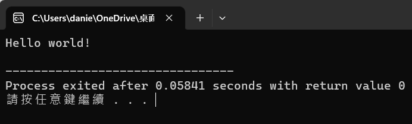
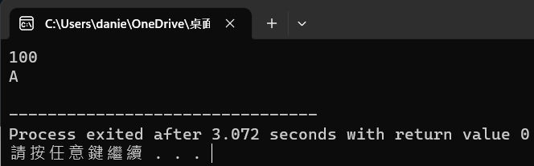
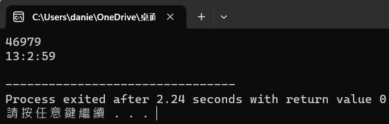
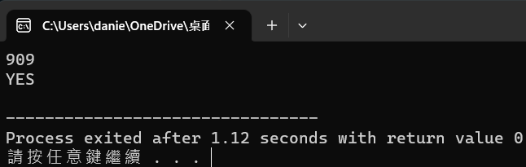

基本架構
C++ 必備以下兩點
- 標頭黨 : #include開頭的都是標頭黨，上面的iostream是標準輸入輸出的標頭黨，之後還會有更多的標頭黨需要學習
- 主函式 : main下方的大括號區間是我們編寫程式碼的位置
資料型態
常見的幾種資料型態
數字
- int : 整數(不包含小數點)範圍等於-2的31次方 ~ 2的31次方-1
- double : 雙精度浮點數範圍±1.7E-308 和 ±1.7E308之間，意思就是有包含小數點的整數
- long long : 超長整數(不包含小數點)範圍等於-2的63次方 ~ 2的63次方-1
符號
布林值
輸入輸出
常見的兩種輸入可混搭
- scanf語法 : scanf("資料型態", &變數名稱);，以下是資料型態對應
- int : %d
- double : %lf
- long long : %lld
- char : %c 或 %s
- string : 不能用scanf
- cin語法 : cin >> 變數名稱;
常見的兩種輸出
- printf語法 : printf("資料型態", 變數名稱);
- cout語法 : cout << 變數名稱;
兩種輸出的換行
- printf("\n");
- cout << endl; 或者是 cout << "\n";
範例1 - 輸入數字a 輸出數字a
運算子
常見的幾種運算子
- + 加
- - 減
- * 乘
- / 除
- > 大於
- >= 大於等於
- < 小於
- <= 小於等於
- == 判斷是否相同時要兩個"="，如果只是給值只需要一個
- ++運算子分兩種，但結果都是+=1
選擇結構
if語法 : if(判斷的內容)
範例2 - 判斷數字大小
對比範例2 - 判斷數字大小
switch可以被if取代這裡不教
練習1 - Hello world!
題目敘述:
嘗試自己印出Hello world!
參考程式碼
範例輸出

練習2 - 分數分級
題目敘述:
輸入一個數字後輸出他的分數級
Input:
第一行包含一個數字a表示分數
Output:
第一行包含一個字元c表示分級，以下是對應的分級
- 80 ~ 100 : A
- 70 ~ 79 : B
- 60 ~ 69 : C
- 0 ~ 59 : F
- 大於100或小於0 : Error
參考程式碼
範例輸出

練習3 - 時分秒
題目敘述:
輸入一個數字秒後輸出他時分秒
Input:
第一行包含一個數字a表示秒
Output:
第一行包含一個字串由':'分割時分秒
參考程式碼
範例輸出

練習4
題目敘述:
輸入一個數字a範圍 0 ~ 999，判斷是否是3的倍數、並且每個位數不能是0以外的偶數
Input:
第一行包含一個數字a範圍 0 ~ 999
Output:
如果符合題意輸出"YES"否則"NO"
參考程式碼
範例輸出
